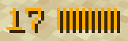
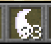

1. Verifying that you have the datapack installed
- A simple /reload should yield something like this:
- If this does not appear something is broken.

2. Opening the power
- 1. Start by looking straight ahead while crouching.
- 2. Wait until you see the following in chat:
- 3. Now look up while still crouching, the result should be:


3. Building a spell
- 1. First use (either by dropping or right-clicking) earth:
- 2. Then use fire:
- 3. Now you should have your spell in the last slot of your hotbar:
- 4. Right-click with the spell in your hand to use it.


4. Balancing your power
- 1. You will notice your held mana going down:
- 2. To fix this you have to start drawing more.
- 3. This is done by increasing your force amount above 32. To do this, right-click with the force item in your hand.
- 4. After deselecting the force, your mana will start to increase. Be careful as drawing too much can have dire consequences!
- 5. To lower your held mana, you have to decrease your force amount below 32. Simply drop the force item until you have less than 32 in your inventory. After deselecting the item, you will notice your mana decreasing.

